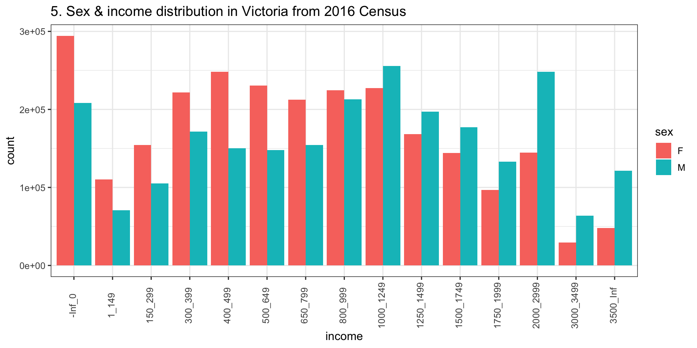
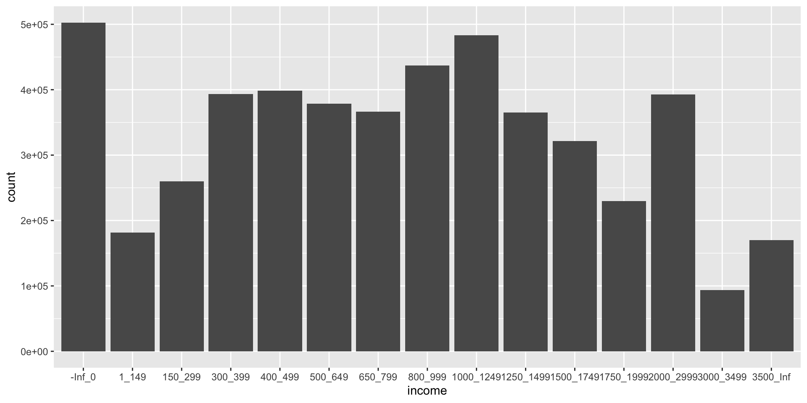
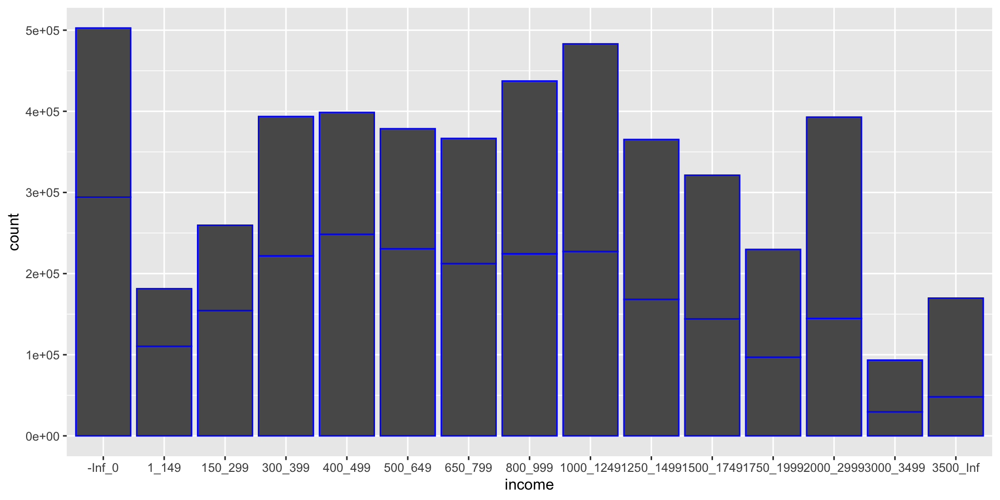
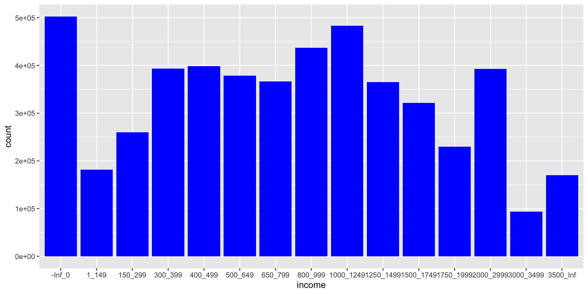
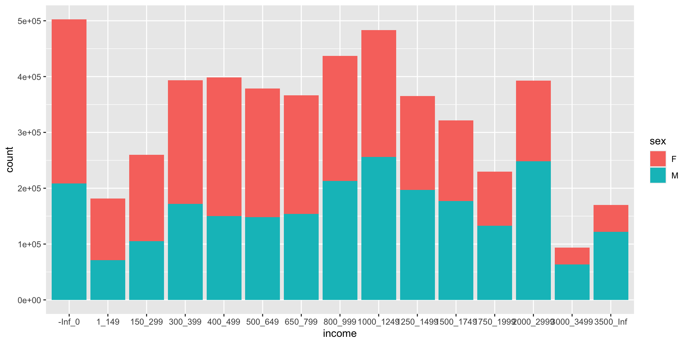
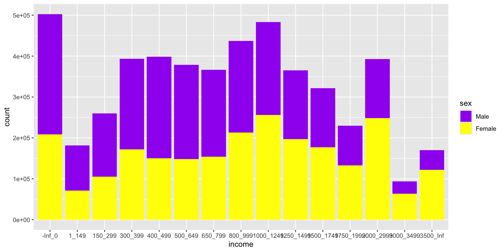
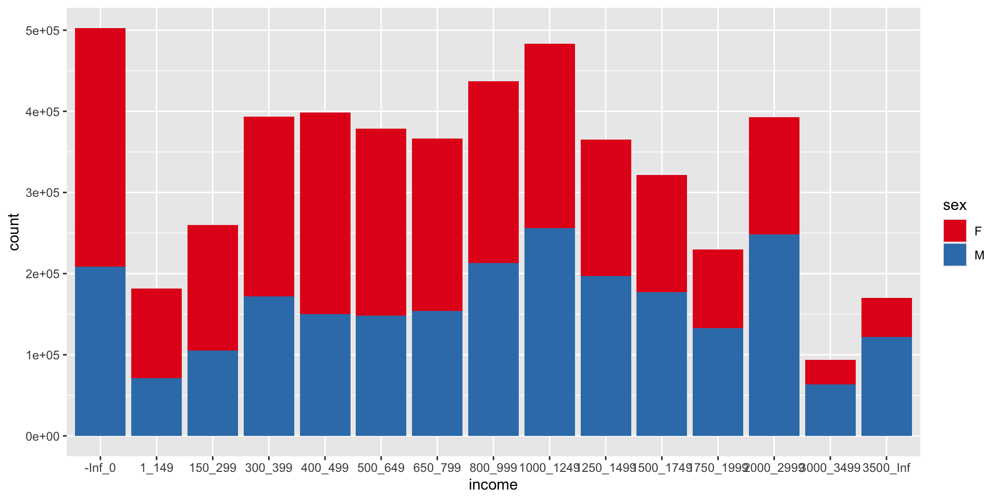
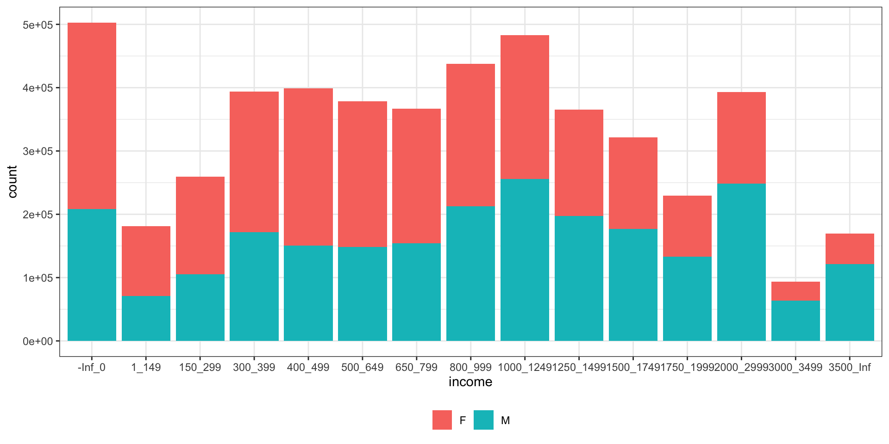
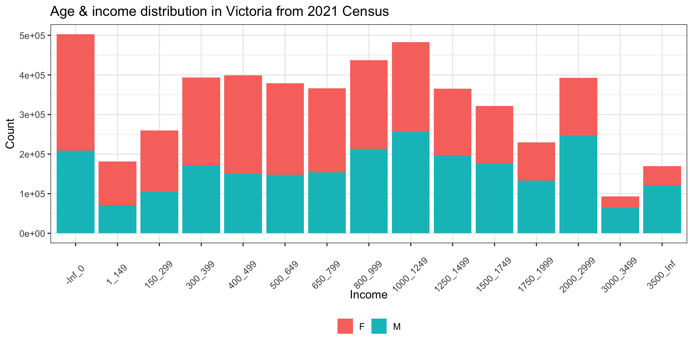
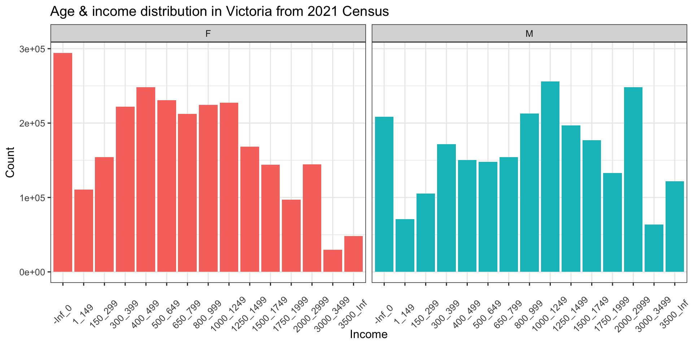

Getting started in ggplot2
*Based on notes from Kate’s unit on data Visualisation and Communication ETX2250/ETF5922
Shrek
Shrek and ggplot2
ggplot2 is just like Shrek!
It has layers!
Once you get to know it better you’ll love it!
“Ogres have layers. Onions have layers. You get it? We both have layers” - Shrek

The Layers
- Data:
- The dataset you’re visualising.
- The dataset you’re visualising.
- Aesthetic Mappings (
aes()for short):- Map variables to visual properties like x, y, color, size, etc.
- Map variables to visual properties like x, y, color, size, etc.
- Geometries (
geom_*):- Define the type of plot (e.g., bars, lines, points).
- Scales:
- Control how data maps to aesthetics (e.g., axis limits, color gradients).
- Facets:
- Split the data into multiple panels (e.g.,
facet_wrap()).
- Split the data into multiple panels (e.g.,
- Themes:
- Customise the non-data components (e.g., background, grid lines).
Base Layer
Start by creating an empty plot on which to add your layers. We’ll add layers to this plot using + (not |>)

Data Layer
Data
First step is to add our data
I’m going to use the data we tidied in Tutorial 4
census_path <- here::here("data/2021_GCP_all_for_VIC_short-header/2021 Census GCP All Geographies for VIC/")
STE_paths <- glue::glue(census_path, "{geo}/VIC/2021Census_G17{alpha}_VIC_{geo}.csv",
geo = "STE", alpha = c("A", "B", "C"))
data_paths = STE_paths
# Read in each of the three tables
tbl_G17A <- read_csv(data_paths[1])
tbl_G17B <- read_csv(data_paths[2])
tbl_G17C <- read_csv(data_paths[3])
# Combine all the data together
tbl_G17 <- bind_rows(tbl_G17A, tbl_G17B, tbl_G17C)
# Change the format of the table to make it longer instead of wider
# This is a step closer to a tidy format
tbl_G17_long <- tbl_G17 |>
pivot_longer(cols = -1, names_to = "category",
values_to = "count")
# We want to split the strings using the "_"
# But there are multiple different cases to consider
tbl_G17_long_formatted <- tbl_G17_long |>
filter(!str_detect(string = category, pattern = "Tot"),
!str_detect(category, "PI_NS")) |>
mutate(
category = str_replace(category, "Neg_Nil_income", "-Inf_0"),
category = str_replace(category, "Neg_Nil_incme", "-Inf_0"),
category = str_replace(category, "Negtve_Nil_incme", "-Inf_0"),
category = str_replace(category, "more", "Inf"),
category = str_replace(category, "85ov", "85_110_yrs"),
category = str_replace(category, "85_yrs_ovr", "85_110_yrs"))
# The data can be converted to the tidy format
tbl_G17_tidy <- tbl_G17_long_formatted |>
mutate(category = str_remove(category, "_yrs")) |>
separate_wider_delim(cols = category, delim = "_",
names = c("sex", "income_min", "income_max", "age_min", "age_max")) |>
unite("income", c(income_min, income_max), remove = FALSE) |>
unite("age", c(age_min, age_max), remove = FALSE)Data view
# A tibble: 20 × 9
STE_CODE_2021 sex income income_min income_max age age_min age_max count
<dbl> <chr> <chr> <chr> <chr> <chr> <chr> <chr> <dbl>
1 2 M -Inf_0 -Inf 0 15_19 15 19 88386
2 2 M -Inf_0 -Inf 0 20_24 20 24 21186
3 2 M -Inf_0 -Inf 0 25_34 25 34 17702
4 2 M -Inf_0 -Inf 0 35_44 35 44 12908
5 2 M -Inf_0 -Inf 0 45_54 45 54 13821
6 2 M -Inf_0 -Inf 0 55_64 55 64 20775
7 2 M -Inf_0 -Inf 0 65_74 65 74 21425
8 2 M -Inf_0 -Inf 0 75_84 75 84 9115
9 2 M -Inf_0 -Inf 0 85_1… 85 110 3158
10 2 M 1_149 1 149 15_19 15 19 35243
11 2 M 1_149 1 149 20_24 20 24 8674
12 2 M 1_149 1 149 25_34 25 34 3296
13 2 M 1_149 1 149 35_44 35 44 2511
14 2 M 1_149 1 149 45_54 45 54 3317
15 2 M 1_149 1 149 55_64 55 64 5483
16 2 M 1_149 1 149 65_74 65 74 7602
17 2 M 1_149 1 149 75_84 75 84 3604
18 2 M 1_149 1 149 85_1… 85 110 1214
19 2 M 150_299 150 299 15_19 15 19 18874
20 2 M 150_299 150 299 20_24 20 24 17995Wrangle data for plotting
Create frequency data grouped by sex and income.
## This line is very important to how your bars appear on your plot!
tbl_G17_tidy$income <- fct_reorder(tbl_G17_tidy$income,
as.numeric(tbl_G17_tidy$income_min))
data_for_plotting = tbl_G17_tidy |>
filter(sex != "P") |>
group_by(sex, income) |>
summarise(count = sum(count, na.rm = TRUE)) |>
ungroup()Want something like this

Add you data layer
It’s still an empty plot because we haven’t told R what to do with the data yet.
Geometry Layer (geom)
geom
The geometry is the type of plot you want to create
(e.g line, scatter, bar, heatmap etc.)Let’s create a coloumn plot
Use the geometry layer -
geom_colSimilar to
geom_bar(but does slightly different things)If you type
?geom_in your Console and hit tab to scroll through a list of all the different plot geometries
Bar Plot
Add your geom
This is what your code should look like when you add your geom layer
Warning
But … this code won’t work yet, because we haven’t added our aesthetic layer
The aesthetic layer defines how data is mapped to visual properties in your plot
- e.g what goes on the x/y axes
Aesthetic Layer
Common Aesthetic Mappings
Use the aes() function to map variables to aesthetics.
The common parts are:
x: The variable on the x-axis.
y: The variable on the y-axis.
color: The color of points, lines, or outlines.
fill: The fill color for bars, areas, or shapes.
size: The size of points or lines.
shape: The shape of points (e.g., circles, triangles).
alpha: The transparency level.
Adding the aesthetic layer
Let’s start with x and y.

Another Option
If you are going to use multiple data types or need multiple aesthetics layers it is better to put the code about the data and the aesthetics in the same geom layer.

Colour and Fill
Set the bar colour to blue

Note col in geom_col is short of column, but typically col stands for colour.
Colour and Fill
Set the bar fill to blue

Colour and Fill
Set the bar fill using the sex variable.

Colour and Fill In Code
Common misunderstandings
If you want to colour/fill by the name of a variable then you need to put it in the aesthetic mappings (e.g.
aes()brackets)If the colour/fill is fixed, (e.g. you want to colour everything black), then the input is just in the
geom_*()bracket.Depending on what geom you use, there may be a difference between colour and fill
Both spellings of colour and color will work
Scale Layer
Scales
Next layer in the visual elements is scale. e.g. axis limits and color scales
Let’s try a silly example where we manually assign colours.
Defining manual colour scales

Using In Built Fill/Colour Scales
You can use the inbuilt palettes from RColourBrewer

Fill/Colour Scales
Fill/Colour Scales
IMO: Fill/colour scales are one of the hardest parts about learning ggplot2
To change colour scale, use
scale_colour_*To change fill scale, use
scale_fill_*Check out all the different types of scales using the help menu
?scale_and hit tab.Note for discrete variables needing distinct colours, such as categorical variables, you can use
scale_*_brewerFor variables needing a smooth gradient use
scale_*_distillerYou can also set colours manually using
scale_*_manual
Note * here is like a blank space and it means there are multiple things that could be inserted here
Themes
Themes
Here is a list of the themes.
My favourite is
theme_bw().
Changing Theme Background
Here I change the theme background to theme_bw().
Plot Theme Specifics
Plot Theme Specifics
To tune the more specific aspects of your theme, we use the
theme()layer.Look up
?themethere are a lot of options!
Changing Theme Specifics
Here I move the legend to the bottom and remove the legend label.

Polising your plot
The theme() layer is also were you can specifics about titles, text and axes. You could also change label names in the theme using labs()
final_plot <- ggplot(data_for_plotting, aes(x = income, y = count, fill = sex)) +
geom_col() +
theme_bw() +
theme_bw(base_size = 12) +
labs(
title = "Age & income distribution in Victoria from 2021 Census",
x = "Income",
y = "Count"
) +
theme(legend.position = "bottom",
legend.title = element_blank(),
axis.text.x = element_text(angle = 45, vjust = 0.3)) Final plot

One last example: Facets
ggplot(data_for_plotting, aes(x = income, y = count, fill = sex)) +
geom_col() +
facet_wrap(~sex) +
theme_bw() +
theme_bw(base_size = 12) +
labs(
title = "Age & income distribution in Victoria from 2021 Census",
x = "Income",
y = "Count"
) +
theme(legend.position = "none",
axis.text.x = element_text(angle = 45, vjust = 0.3)) One last example: Facets
